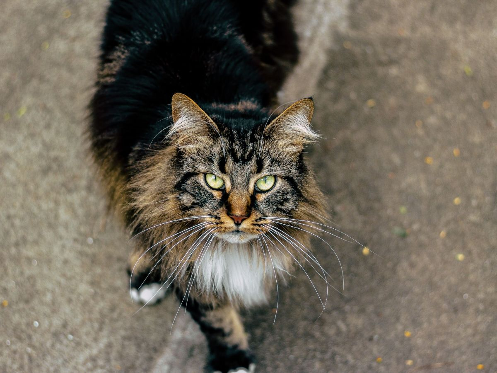
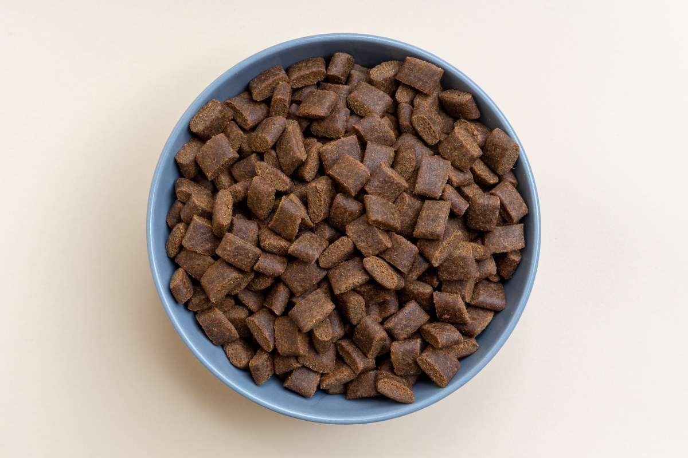
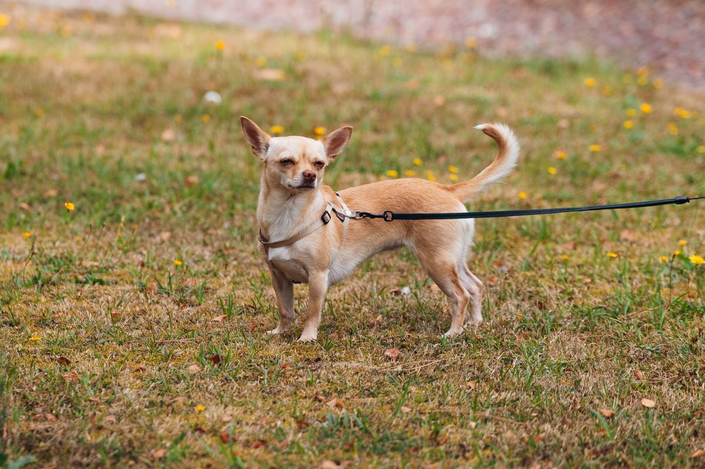
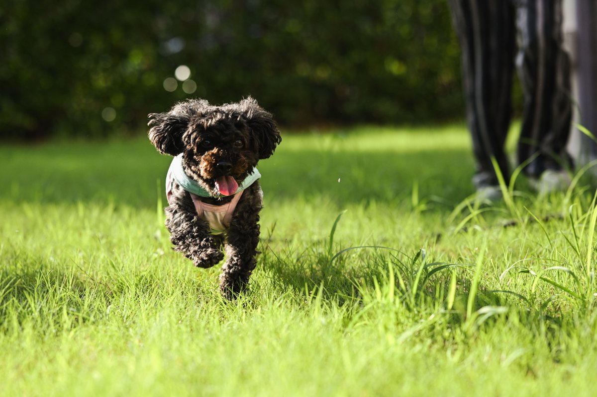
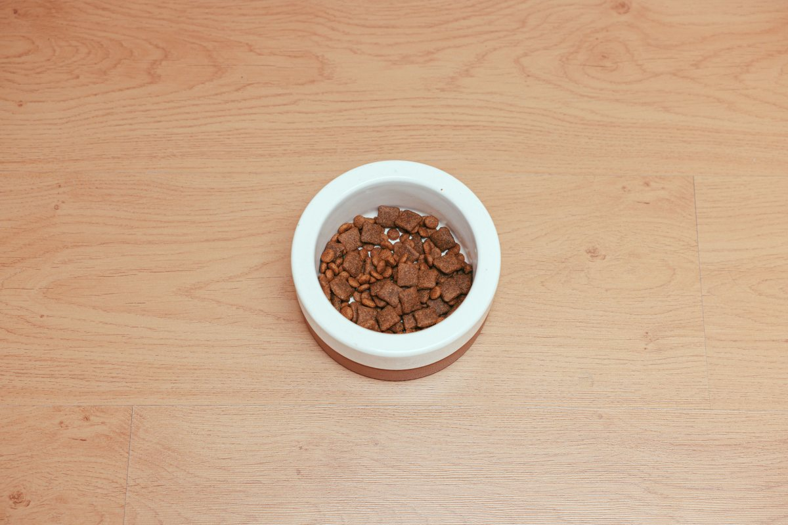
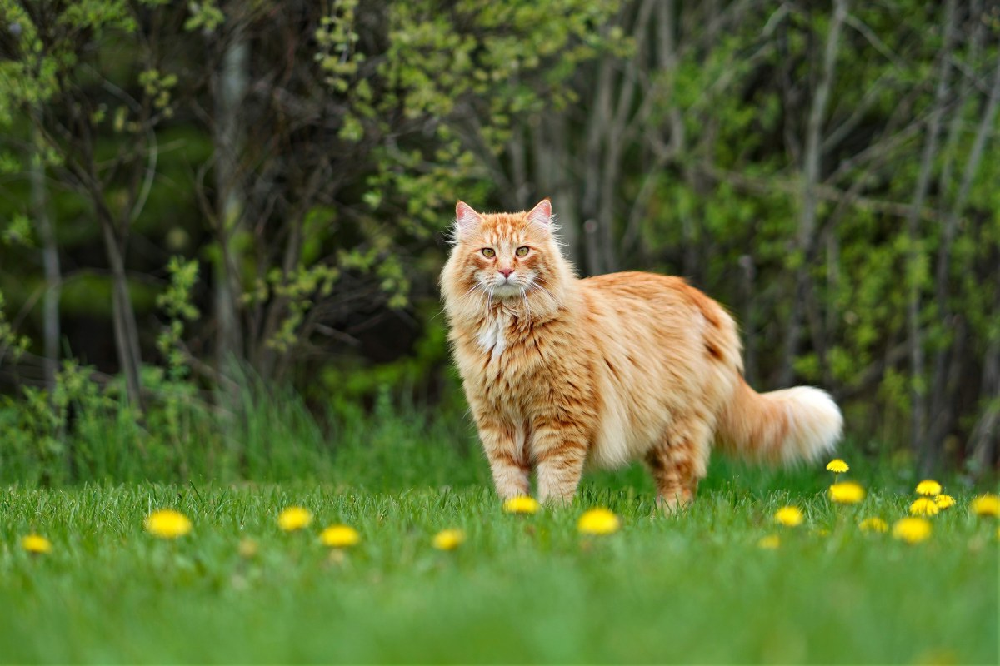

Maipú · Camino La Farfana 1338
¿Está gordo, o estás exagerando?
Veterinaria El Buen Pastor, con 260 reseñas en Maipú. La respuesta está en un control de peso.
- 260reseñas en Google
- 14años atendiendo a un mismo perro, según una reseña
- 6días a la semana abierta
- 0webs propias: su nombre en .com es de una clínica de México
El peso justo
Míralo desde arriba antes de pesarlo
-
Bajo peso
Se ven las costillas y la cadera.
-
Justo
Se nota la cintura; las costillas se sienten.
-
Sobrepeso
Sin cintura; las costillas no se encuentran.
- Desde arriba. Detrás de las costillas, el cuerpo debería angostarse.
- Al tacto. Pasa la mano por el costado: las costillas se sienten, sin apretar.
- En el paseo. Si se cansa antes que hace un año, anótalo.
No es un diagnóstico ni una dieta: la ración y el peso ideal los define el control.
La balanza no miente, pero el ojo se acostumbra.
Qué se atiende
En la consulta de la tarde
-
Consulta
Con el doctor
Las reseñas hablan de un diagnóstico certero.
-
Exámenes
Antes de tratar
Diagnóstico con exámenes y estudios.
-
Peluquería
Baño y corte
Diez reseñas la nombran.
-
Peso
Control de peso
La balanza, cada cierto tiempo.
-

Vacunas
Al día
Perros y gatos.
-
Mayores
Hasta el final
Con paciencia, año tras año.
Consulta, exámenes y peluquería salen en sus reseñas de Google; el control de peso y las vacunas son de ejemplo.
«Atendieron por 14 años a mi Polo, hasta su último día».
Una reseña de Google
Los de cuatro patas
Paseos, siestas y platos





Fotos de referencia: ninguna es de la veterinaria.
Dónde está
Camino La Farfana 1338, Maipú
- Teléfono
- (2) 2762 5686
- Lun a vie
- 17:00–20:00
- Sábado
- 12:00–18:00
- Domingo
- Cerrado
En la semana atiende de tarde: llama antes de ir.
La Farfana 1338 Abrir en Google Maps
Para El Buen Pastor
Qué es real y qué falta
Lo verificado
Dirección, teléfono, horario y reseñas, al 13-09-2026.
Lo de ejemplo
La guía del peso, los servicios que no salen en reseñas y las fotos.
Lo que falta
Una web propia: hoy, quien escribe su nombre llega a veterinariaelbuenpastor.com, que es de una clínica de México.